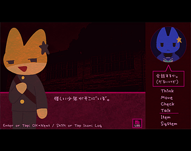
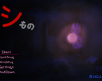
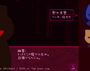
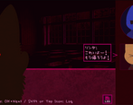
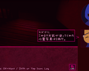
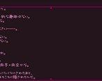
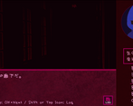

Log in with itch.io to leave a comment.
9枚撮ってコンプリート！最初の出会いと事件部屋だけドキッとしたけど、残りは甘口ホラーな感じで楽しめました！
最後のシーン～アーカイブを見た時の切ない感じもよかったです！


Comments
9枚撮ってコンプリート！最初の出会いと事件部屋だけドキッとしたけど、残りは甘口ホラーな感じで楽しめました！
最後のシーン～アーカイブを見た時の切ない感じもよかったです！